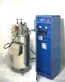
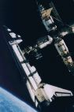
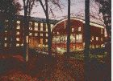
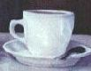
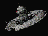

The Thrill of Discovery
Historical Aspect of Astronomy
Social Status
Astronomy or Astrophysics?
Publish or Perish
Tools of the Trade
The Educational Process
Travel
Observing Runs
Conferences
Why are my Web Pages Black?
Prospects for Careers in the Field
Special Aspects of Being an Astronomer
Having such a rich legacy in the field is not without its downside, however. Many - it could be argued all - classification schemes for all sorts of astronomical objects were dreamed up by people who didn't understand what the hell they were talking about. Example - stars are classified by their spectra, a dissection of the light into its component colors. The original scheme started at A and went down from there - not bad, huh? Turns out, though, that "O" was the most appropriate spectrum to go first - but, as is commonplace in astronomy, the original classifications were kept. So now students of the field are forced to learn politically incorrect mnemonics to keep things straight ("OBAFGKM" doesn't really roll of the tongue.)
This fascination is especially evident in bars. Suddenly mere mortals have in front of them what they perceive the font of galactic wisdom - you, the professional astronomer. People have generally had a few, and in the process of tying one on, they feel that they can plumb the secrets of the universe - and you are their avenue for doing so. Questions from these sort of people run the range from insightful to incoherent, typically the latter, and generally involving questions about:
 I believe that much
of this unique status can be traced back to ancient times. Back then we
weren't merely astronomers - we were the astronomer priests. Crops flourished
or withered & died based upon what side of bed we got out of in the
morning; vestal virgins were lavished upon us; affairs of state were directed
based upon our interpretations of random events in the sky. Sure, tending
to the eternal flame could be a real nuisance, but my guess is that it
was no different then topping off dewars every 6 hours. Oh yeah, that heaven
& hell thing - we called the shots on that too.
I believe that much
of this unique status can be traced back to ancient times. Back then we
weren't merely astronomers - we were the astronomer priests. Crops flourished
or withered & died based upon what side of bed we got out of in the
morning; vestal virgins were lavished upon us; affairs of state were directed
based upon our interpretations of random events in the sky. Sure, tending
to the eternal flame could be a real nuisance, but my guess is that it
was no different then topping off dewars every 6 hours. Oh yeah, that heaven
& hell thing - we called the shots on that too.
Ahh, here's to the good old days.
Cryogens
- Highly sensitive detectors usually require operation at subzero temperatures,
and cryogens are abundant at observatories. Some of the popular flavors:
Dry Ice - Solid carbon dioxide. Formerly very popular with photomultiplier
tubes; it has fallen out of favor as of late.
Liquid Nitrogen - The favorite. Liter for liter, it's the same
price as milk, it's good & cold (77 K), but not too much so - it's
still pretty easy to handle.
Liquid Helium - Somewhat exotic. Very cold stuff - 4 K - makes
it rather tricky (and dangerous!) to kick around; it's also somewhat expensive.
However, certain instruments need to get down past LN2 temperatures, so
liquid helium is not terribly uncommon.
Solid Hydrogen - VERY exotic. Used by the military in Star Wars
satellites (check out the
MSX mission for more information).
Electronics & Electrical Systems - Note that this is quite separate from 'Computers'. This subject comes in two flavors: digital and analog. Digital is simply Boolean algebra wrapped up into devices that you put together not quite unlike Legos - simple stuff. Analog, on the other hand, is black magic. There is roughly a dozen people in the world who truly understand analog; their leader is Paul Horowitz.
Optics - High quality astronomical optics can be a real pain in the ass to deal with. The stuff is difficult to align, impossible to clean (a task best avoided), and never ever perfect, regardless of how much money is spent on it. One is always left with the feeling that optical elements are never quite pointing in the right direction, that they're covered with just a little too much dust, and of course sporting better than a quarter wave of ripple across the surface. None of these suspicions, of course, can be ever resolved to your satisfaction.
Vacuum technology - Loads of the stuff. Playing with cryogens usually involves dewars; dewars are essentially giant Thermos bottles with the detectors inside. What make a Thermos work is its evacuated sleeve between its inside and outside worlds - no heat gets conducted. Dewars sport the same design and as such astronomers get quite familiar with maintaining such beasties. Note that vacuums mean pumps, pumps mean pipes, and pipes mean that you've suddenly become the world's most highly educated plumber. Unfortunately the pay is strikingly better if you stick to working on Maytags.
Fun
stuff - As an observational astronomer, I've had to get proficient
with some downright unusual items. For example:
Tucker Snow Cats - Going up - and down! - Jelm mountain road
in the dead of winter, through six foot snow drifts is no task for even
the beefiest of 4x4's. So running this four-tracked behemoth is a skill
best developed at one's leisure, before it's needed in desperation.
Cranes - Even small telescopes tend to be ponderously heavy;
installation of these instruments is beyond the capabilities of even a
team of Navy Seals. Hence, heavy machinery often comes into play when dealing
with observatories.
Exotic Materials - Sapphires and rubies can be found in jewelry
stores, but they're also particularly useful crystalline structures when
it comes to dealing with light. Other not so 'precious' (but equally expensive!)
materials abound - my own experience is with fluorine derivatives, like
calcium fluoride and magnesium fluoride.
Graduate Education - Welcome to hell. Graduate school is a process of being overworked and underpaid, just to see who wants it enough. Excellence is replaced by survival as the ultimate, elusive goal. There are two arenas of learning: classroom knowledge, and actual knowledge. The former will tend to concentrate on esoteric areas of physics that you will never ever use again after your comprehensive examinations; any useful content that might be contained in this phase of your education will more often than not be obviated by inept teaching. The latter arena is rife with topics that you never even knew existed but will learn to swear by - for example, IDL isn't listed in any curricula I know of, but you'd be hard pressed to find a department that hasn't shelled out the big bucks for the language.
Typically travel falls into two categories - observing runs (data collection) and conferences (data presentation). For those high on the food chain, there is also travel to Washington, DC (getting money for collecting & presenting data).
The Equipment
You are at the mercy of the equipment. Equipment tends to malfunction
most vigorously when the weather is favorable - I've never had a dewar
go soft on me while it is raining out. It will do so swiftly, viciously
and without compunction as to how vital your research is to our understanding
of the universe - or at least, your projected dissertation completion date.
Accepting the foibles of the machinery is more important than ignoring
your observing assistant's bad personal hygiene.
Stimulants
Let's face it, going from a 9 to 5 schedule to a 9 to 5 on the other
side of the clock (in a day or so) often requires an extra kick in the
pants - especially on that second night, about 3 AM. This requirement subsides
usually by about night four or five, but in the meantime you need all the
help you can get. Two popular choices:
Caffeine - The socially acceptable stimulant of choice. Available
in a variety of delivery systems - coffee, tea, hot chocolate, Mountain
Dew, or in its most unadulterated form - NoDoz. Of these, coffee is the
preferred method.
Nicotine - The socially unacceptable stimulant of choice. Few
American astronomers smoke, a large number of European astronomers do.
Aside from these two legally available stimulants, I would guess that
there are other not-so-legal methods for staying awake at night, but typically
astronomers don't indulge in such things. Part of this comes from the typical
academian 'my body is my temple' attitude, but mostly it's due just to
astronomers being dirt poor.
Supplies
So you're going to be staying up all night for days on end - is there
anything special to bring along? Of course! A few vital supplies not to
forget:
Chips Ahoy - Not just any cookies, these particular ones hold
up well under the rigorous environment. A quick & effective solution
to those late night munchies - pretzels work too, but only the large ones
(something to nibble, not gobble).
Music - Whistle while you work - and remember, the more obnoxious
the melodies, the greater your chance of staying awake while listening
to them. Particularly effective: White Zombie, Offspring, Shotgun Messiah.
Extra Work - On an observing run, you don't stand a snowball's
chance of actually doing outside work, but it's a good moral boost
- at least when you're packing.
Email Addresses - Social isolation is by no means desirable,
and email is a quick & dirty way to stay in contact with the outside
world - e.g. "what day is it?" Keep in mind, however, that your correspondees
will soon tire of complaints about the weather or the equipment. It also
important to be aware that late night email composed before you've successfully
kicked your schedule over can be at best incoherent, and at worst incriminating.
Conferences are a matter of networking - to meet people you need to convince your results are true, and to go about convincing those you've already met. Typically this job is easier if your data is good, so this is motivation to do your astronomy right. Essentially, it's fraternity rush all over again - "Hello, damn glad to meet you, come take a look at my poster paper - I think you'll find it the best one on campus." However, since very few conference attendees (they are, after all, astronomers) were in fraternities or even rushed, the analogy is lost on them.
Secondly, I am an observational astronomer; if you look at my bookmarks, you'll see that there's a lot of links set up for observational work - satellite pictures, the SIMBAD database, etc. These pages see a great deal of use when I'm observing - and since much of my work is carried out under darkroom conditions, it's best to minimize the amount of flux from the various computer screens. Hence the black background.
I should note that I do believe astronomy to be an absolutely necessary endeavor of any culture worth its weight in salt. Astronomy has consistently produced revolutions - and revelations - in how we view both the universe and ourselves in relation to that universe. It is a hallmark of the curious, exploratory nature of our species. Probably when we came down out of the trees millions of years ago, our ancestors looked back up to whence they came and saw the stars lurking between the branches. Without a doubt, the first grant proposals were written soon thereafter.
This page is current as of 19 December 2011 and managed by Dr. Gerard van Belle, Lowell Observatory (formerly of European Southern Observatory, and prior to that, formerly from Caltech and The Jet Propulsion Laboratory). My guess is that a few people will be amused by my rather random comments, a few will be annoyed by them (for example, economists), and most will just be nonplussed. Any which way, you can vent your spleen by emailing me at gerard@lowell.edu.
 Last
modified on 12 October 1996 (we were socked in at
the
IOTA site). This page was created using Netscape Navigator
Gold 3.0 on both Macintosh and PC.
Last
modified on 12 October 1996 (we were socked in at
the
IOTA site). This page was created using Netscape Navigator
Gold 3.0 on both Macintosh and PC.
{kind=link}
{kind=link}
{kind=link}